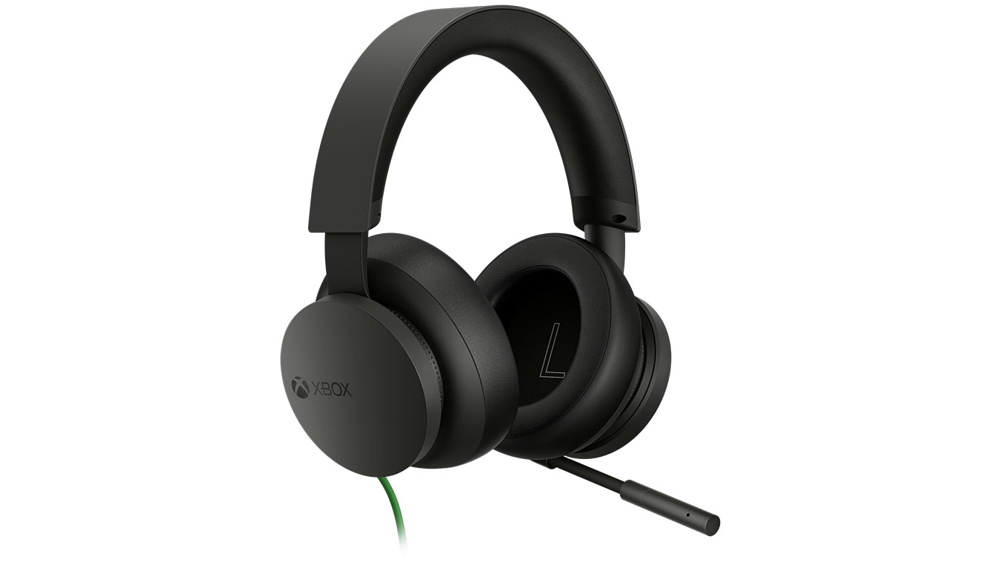
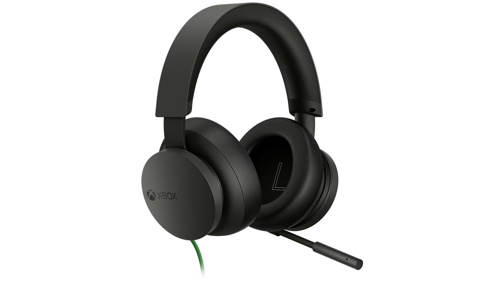

Products
Elevate your gaming experience with the Xbox controller lineup. The Xbox Wireless Controller, priced at $59.99, offers an ergonomic design with improved comfort and grip, customizable options with interchangeable thumbsticks and D-pads, and seamless connectivity across Xbox Series X|S, Xbox One, Windows 10 PCs, and mobile devices. For those seeking pro-level precision, the Xbox Elite Wireless Controller Series 2, starting at $129.99, delivers ultimate customization with adjustable-tension thumbsticks, interchangeable components, and exclusive button mapping options. It boasts up to 40 hours of rechargeable battery life and hair-trigger locks for faster shooting.
The Xbox Wireless Headset, priced at $109.99, offers seamless connectivity with Xbox Series X|S, Xbox One, and Windows devices via Bluetooth. It supports spatial audio technologies Dolby Atmos, delivering immersive sound. Designed for comfort, it features lightweight, adjustable construction with foam ear cushions and boasts up to 20 hours of battery life. The Xbox Wired Headset, priced at $59.99, also delivers high-quality sound and supports spatial audio technologies, ensuring an immersive gaming experience. Its lightweight and adjustable design, combined with a built-in microphone with noise isolation, make it a practical choice for gamers who prefer a wired connection.
 
